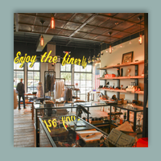

Teka Nicholas
SAN ANTONIO
Home
About
Portfolio
Contact
Projects completed during my time at the
Art Institute of San Antonio.

My time at San Antonio's premiere men's
store, The Sporting District at the historic
Pearl Brewery complex.